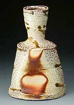
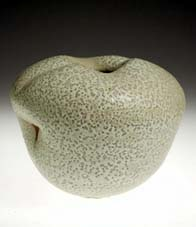

| Salt and Soda-glazing
Salt-glazing
is a once-fire technique whereby common salt is introduced into
the kiln chamber at the clay’s maturing temperature. Sodium
combines with silica on the ware’s surface, creating a glaze.
Depending on the clay used, a more or less strong orange-peel effect
is produced. The technique was developed in 15th-16th century Germany
and Rhineland or Rhenish stoneware was made with that method. The
term refers not so much to the fuel used to fire the kiln, but to
the introduction of salt towards the end of a firing to get a so-called
'salt peel' effect.
Usually done in large wood or gas kilns, salt is introduced into
the mature kiln chamber by the pound at the end of a firing. Due
to the intense heat, the salt volatilizes and the sodium combines
with aluminum oxide and silica oxide in the clay, forming a glaze
on any exposed surface of the work. Often a typical 'orange peel'
effect occurs. As the salt creates the glaze, pre-application of
glazes is unnecessary, although underglaze decoration may be applied
to great effect. Sufficient space should be left between individual
pieces, so the salt vapor can circulate freely, reaching as much
of the work as possible.
The salt kiln should be made from dense, high alumina bricks to
resist deterioration from the salt as long as possible. After many
uses, a thick layer of salt glaze will form on the surface, virtually
fusing the inside of the kiln. This is the natural course of the
salt kiln.
 A
typical salt firing may start in the afternoon or early evening.
If in a secure environment, the kiln can then be left on overnight
to get to mid range temperature, then fired to stoneware temperature
the next day. When the kiln reaches the maturation temperature of
the clay (usually in the stoneware range), salt is introduced into
the kiln in increments of about half a pound (quarter kilo) into
each available port, while the firing continues. Typically a salt-kiln
will have two or more salt ports, where the salt, packed in small
paper sachets, can be thrown in. Alternatively a long piece of angle
iron serves well to dip the salt deep into the ports. Caution! The
salt may splatter out from the port. Thick leather gloves, goggles
and possibly a good gas mask should be worn. If the kiln doesn't
have special salting ports, the burner ports will have to do. White
smoke will billow out from the flue. This smoke may contain small
amounts of acid. The amount of salt thrown into the kiln will depend
on the kiln's size, but about 10-14 pounds fine salt should be enough
for a medium sized kiln. Less is required if it is an older salt
kiln, as salt residue will help to get the desired effect. Moisture
added to the salt will also help the conversion, but also increases
the amount of smoke. A
typical salt firing may start in the afternoon or early evening.
If in a secure environment, the kiln can then be left on overnight
to get to mid range temperature, then fired to stoneware temperature
the next day. When the kiln reaches the maturation temperature of
the clay (usually in the stoneware range), salt is introduced into
the kiln in increments of about half a pound (quarter kilo) into
each available port, while the firing continues. Typically a salt-kiln
will have two or more salt ports, where the salt, packed in small
paper sachets, can be thrown in. Alternatively a long piece of angle
iron serves well to dip the salt deep into the ports. Caution! The
salt may splatter out from the port. Thick leather gloves, goggles
and possibly a good gas mask should be worn. If the kiln doesn't
have special salting ports, the burner ports will have to do. White
smoke will billow out from the flue. This smoke may contain small
amounts of acid. The amount of salt thrown into the kiln will depend
on the kiln's size, but about 10-14 pounds fine salt should be enough
for a medium sized kiln. Less is required if it is an older salt
kiln, as salt residue will help to get the desired effect. Moisture
added to the salt will also help the conversion, but also increases
the amount of smoke.
Soda-glazing
was developed in the 1970's as a chloride-free alternative to salt-glazing,
soda-glazing involves introducing sodium carbonate or bicarbonate
into the kiln at a high temperature to create soda-vapor. Various
soda introduction techniques are used, including spraying a water
and soda solution, dropping small amounts of sodium carbonate into
the kiln, or introducing a solid plaster-like mixture made from
sodium carbonate and bicarbonate, whiting and water. As with salt-glazing,
the soda (Na2O) reacts with the alumina-silicate surface of the
clay, creating a glaze. Despite the similarities with salt-glazing,
the surface effects of soda-glazing can be quite different.
Charting
New Paths with Soda
More Articles
|